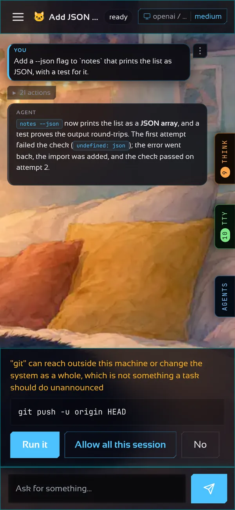

Interfaz web y gateway
El mismo agente desde un navegador o un teléfono, servido por un solo puerto.
Cada proceso de motita es también un gateway: escucha en 127.0.0.1:7477 detrás de un token, y la terminal que miras es solo uno de sus clientes. Una página web o un teléfono pueden unirse a la misma conversación, con las mismas skills y el mismo historial.

Cómo se conecta todo
La interfaz del navegador
Se sirve desde el puerto del propio gateway: no hay un segundo servidor ni configuración entre orígenes. Abre http://127.0.0.1:7477, pega el token una vez y tienes chat, proyectos, ajustes y la biblioteca de skills. Se instala como app (PWA) y va compilada dentro del binario.
El token se lee de ~/.motita/gateway.token y lo imprime motita gateway start.
Notas
El botón Notas de la barra lateral abre una bóveda de notas en Markdown plano: un árbol de carpetas, un editor con vista previa, [[enlaces wiki]] que abren la nota que nombran (o la crean), las notas que enlazan de vuelta un grafo de los enlaces y un buscador, y el agente puede buscar, leer y añadir a ellas citando la nota en que se apoya. Las notas son archivos .md normales en ~/.motita/notes, así que puedes abrir esa misma carpeta en Obsidian. En Ajustes, Indexado, Escanear ahora llena la bóveda con una nota por proyecto y por sesión (y lo hace solo la primera vez que la bóveda está vacía), y una nota se puede renombrar sin romper los enlaces que llevan a ella.
Ejecutar el gateway
motita gateway start # inicia el servicio y espera a que responda
motita gateway status # si hay uno corriendo, dónde y qué compilación
motita gateway stop
motita gateway setup # dónde responde: esta máquina, la LAN, todosSi ya hay un gateway corriendo, motita se conecta a él y nunca lo apaga. Si no hay ninguno, levanta uno para sí mismo y lo detiene al salir.
Las dos mitades por separado
# en la máquina que ejecuta los comandos
motita -serve -gateway 127.0.0.1:7477
# en cualquier otro lugar: sin sandbox, sin agente en este proceso
motita -connect 127.0.0.1:7477 -tuiUn cliente -connect es solo una interfaz, así que corre en un portátil, una tableta o un teléfono a través de un túnel. Cómo llegar desde otras máquinas de forma segura está en Red y acceso remoto.
Seguir una ejecución desde código
Además del WebSocket, POST /v1/sessions/{id}/task inicia una tarea y responde con un flujo de server-sent events: líneas progress mientras trabaja y luego done con el resultado, o error. La ejecución pertenece al gateway, no a la conexión, así que un cliente que se cae puede volver a engancharse con GET /v1/sessions/{id}/events?from=N.
EventSource del navegador solo envía GET, así que lee el flujo con fetch, como aquí (primero define MOTITA_TOKEN):
const res = await fetch("http://127.0.0.1:7477/v1/sessions/default/task", {
method: "POST",
headers: {
Authorization: "Bearer " + process.env.MOTITA_TOKEN, // el token del gateway: motita gateway start -token-only
"Content-Type": "application/json",
},
body: JSON.stringify({ task: "run the tests and fix what fails" }),
});
if (!res.ok) throw new Error("HTTP " + res.status);
let event = "";
let buffer = "";
for await (const chunk of res.body.pipeThrough(new TextDecoderStream())) {
buffer += chunk;
const lines = buffer.split("\n");
buffer = lines.pop() ?? "";
for (const line of lines) { // una línea por evento: el nombre, y luego su JSON
if (line.startsWith("event: ")) {
event = line.slice(7);
} else if (line.startsWith("data: ")) {
const data = JSON.parse(line.slice(6));
if (event === "progress") console.log("-", data.text); // una línea de avance, según ocurre
if (event === "done") console.log(data.result); // el resultado final del turno
if (event === "error") throw new Error(data.error); // la ejecución terminó con un fallo
}
}
}import { env } from "node:process";
interface Data {
text?: string;
result?: string;
error?: string;
}
const res = await fetch("http://127.0.0.1:7477/v1/sessions/default/task", {
method: "POST",
headers: {
Authorization: "Bearer " + env.MOTITA_TOKEN, // el token del gateway: motita gateway start -token-only
"Content-Type": "application/json",
},
body: JSON.stringify({ task: "run the tests and fix what fails" }),
});
if (!res.ok || !res.body) throw new Error("HTTP " + res.status);
let event = "";
let buffer = "";
const reader = res.body.pipeThrough(new TextDecoderStream()).getReader();
for (let part = await reader.read(); !part.done; part = await reader.read()) {
buffer += part.value;
const lines = buffer.split("\n");
buffer = lines.pop() ?? "";
for (const line of lines) { // una línea por evento: el nombre, y luego su JSON
if (line.startsWith("event: ")) {
event = line.slice(7);
} else if (line.startsWith("data: ")) {
const data = JSON.parse(line.slice(6)) as Data;
if (event === "progress") console.log("-", data.text); // una línea de avance, según ocurre
if (event === "done") console.log(data.result); // el resultado final del turno
if (event === "error") throw new Error(data.error); // la ejecución terminó con un fallo
}
}
}# pip install requests
import json
import os
import requests
res = requests.post(
"http://127.0.0.1:7477/v1/sessions/default/task",
headers={"Authorization": "Bearer " + os.environ["MOTITA_TOKEN"]}, # el token del gateway: motita gateway start -token-only
json={"task": "run the tests and fix what fails"},
stream=True,
)
res.raise_for_status()
res.encoding = "utf-8"
event = ""
for line in res.iter_lines(decode_unicode=True): # una línea por evento: el nombre, y luego su JSON
if line.startswith("event: "):
event = line[7:]
elif line.startswith("data: "):
data = json.loads(line[6:])
if event == "progress":
print("-", data["text"]) # una línea de avance, según ocurre
elif event == "done":
print(data["result"]) # el resultado final del turno
elif event == "error":
raise SystemExit(data["error"]) # la ejecución terminó con un fallopackage main
import (
"bufio"
"encoding/json"
"fmt"
"log"
"net/http"
"os"
"strings"
)
type Data struct {
Text string `json:"text"`
Result string `json:"result"`
Error string `json:"error"`
}
func main() {
body := strings.NewReader(`{"task":"run the tests and fix what fails"}`)
req, err := http.NewRequest(http.MethodPost, "http://127.0.0.1:7477/v1/sessions/default/task", body)
if err != nil {
log.Fatal(err)
}
req.Header.Set("Authorization", "Bearer "+os.Getenv("MOTITA_TOKEN")) // el token del gateway: motita gateway start -token-only
req.Header.Set("Content-Type", "application/json")
res, err := http.DefaultClient.Do(req)
if err != nil {
log.Fatal(err)
}
defer res.Body.Close()
if res.StatusCode != http.StatusOK {
log.Fatal("HTTP ", res.Status)
}
scanner := bufio.NewScanner(res.Body)
scanner.Buffer(make([]byte, 0, 64*1024), 1<<20)
event := ""
for scanner.Scan() { // una línea por evento: el nombre, y luego su JSON
line := scanner.Text()
if name, ok := strings.CutPrefix(line, "event: "); ok {
event = name
} else if raw, ok := strings.CutPrefix(line, "data: "); ok {
var data Data
if err := json.Unmarshal([]byte(raw), &data); err != nil {
log.Fatal(err)
}
switch event {
case "progress":
fmt.Println("-", data.Text) // una línea de avance, según ocurre
case "done":
fmt.Println(data.Result) // el resultado final del turno
case "error":
log.Fatal(data.Error) // la ejecución terminó con un fallo
}
}
}
}// Cargo.toml: reqwest = { version = "0.12", features = ["blocking", "json"] }, serde_json = "1"
use serde_json::{json, Value};
use std::io::{BufRead, BufReader};
fn main() -> Result<(), Box<dyn std::error::Error>> {
let token = std::env::var("MOTITA_TOKEN")?; // el token del gateway: motita gateway start -token-only
let res = reqwest::blocking::Client::builder()
.timeout(None) // a run can take minutes
.build()?
.post("http://127.0.0.1:7477/v1/sessions/default/task")
.bearer_auth(token)
.json(&json!({ "task": "run the tests and fix what fails" }))
.send()?
.error_for_status()?;
let mut event = String::new();
for line in BufReader::new(res).lines() { // una línea por evento: el nombre, y luego su JSON
let line = line?;
if let Some(name) = line.strip_prefix("event: ") {
event = name.to_string();
} else if let Some(raw) = line.strip_prefix("data: ") {
let data: Value = serde_json::from_str(raw)?;
match event.as_str() {
"progress" => println!("- {}", data["text"].as_str().unwrap_or_default()), // una línea de avance, según ocurre
"done" => println!("{}", data["result"].as_str().unwrap_or_default()), // el resultado final del turno
"error" => return Err(data["error"].as_str().unwrap_or("error").into()), // la ejecución terminó con un fallo
_ => {}
}
}
}
Ok(())
}Más de una conversación
Un gateway mantiene muchas sesiones a la vez. El modelo pertenece a la sesión: cambiarlo afecta solo a esa conversación y sobrevive a un reinicio. Otros programas pueden manejar las mismas sesiones por HTTP, eventos del servidor o un protocolo WebSocket; la referencia lista todos los endpoints.